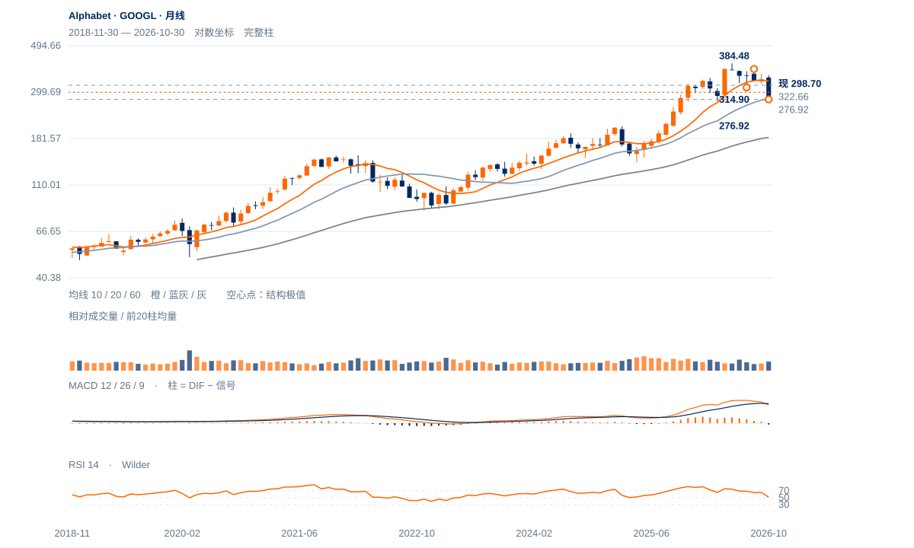

底部候选改善
未来1—5日修复机会增加，296.49原中峰需下一完整收盘保持，305.66是近端上方障碍。
未来1—5日修复机会增加，296.49原中峰需下一完整收盘保持，305.66是近端上方障碍。
未来2—6周偏向277—323内修复。下一完整日保持296.49以上才通过原过滤；305.66、314.90、322.66依次检验，失守276.92则撤销低谷承接解释。
未来1—3个月有形成更大底部的机会，但基准仍为下降中的重建。周收回314.90并形成较高谷后，才支持向337.92扩展；连续两周收低276.92则中期下降延续，当前不编造更低终点。

展开图表 ↗2022低83.34至2025年140.53后长期上行，今年5月冲到408.61。此后价格跌回完整20月均衡280.15附近，目前298.70略在其上，却远低于10月均衡337.92。长期大升后的深度调整仍在，中期恢复需要重建价格结构，不能用几天同价低谷替代。
5月408.61、8月384.48、9月364.17、10月359.40高点逐级降低；7月314.90谷已在10月被跌穿。10月30日276.92与11月5日277.07两低只隔4日，日线中峰296.49在12日才首度收破，完成的是早期回收，不是跨月成熟双底。
276.92—277.07局部同价谷后，296.49中峰仅首日收破。314.90旧谷与322.66缺口远沿，是修复中途更重要的障碍。
10月30日276.92与11月5日277.07仅差0.15；同日RSI由21.38升27.98，显示低位跌势减速，但不是独立价格反转确认。
12日收298.70首次高于11月4日中峰296.49，原两日过滤只记首日。前低间隔仅4个交易日，不将其包装为已成熟的长期双底。
20日线305.66在上，10月29日下缺口288.33—322.66仍未完全回补；50/200日线329.12/338.69更高。20日绝对跌14.47%、相对纳指比值跌9.92%，修复尚未消除下降背景。
下一完整日仍收在296.49上方才满足原两日过滤；305.66与322.66是后续分层障碍。
日收低于289.48先削弱本次上破保持；原276.92日收失守否定低谷守位。
同价低谷的动量改善与中峰首日上破均已出现；若后续保持强、旧缺口快速填补，当前谨慎基准可能低估修复。
| 周期 | 最后完整柱 | 图示柱数 | RSI14 | ATR14 | MACD柱 |
|---|---|---|---|---|---|
| 日线 | 2026-11-12 | 185 | 42.27842 | 10.19664 | 0.62896 |
| 周线 | 2026-11-06 | 156 | 34.99049 | 23.73787 | -8.49974 |
| 月线 | 2026-10-30 | 96 | 51.79296 | 41.8724 | -3.28589 |
美股价格拆股调整、不含分红再投资。完整周线至11月6日；11月进行中。指数成交量与全成分广度受限。